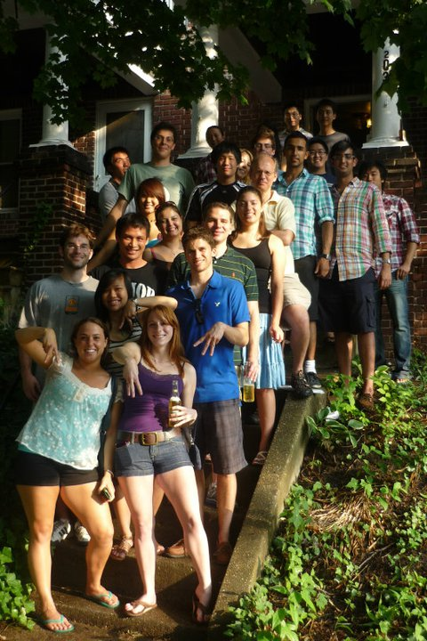
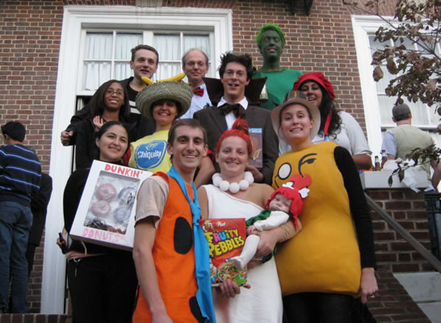

Pictured: Kim Ellis, Stefanie Bergres, Coral Fung, Tommy Harrelson, Stanley Chung, Joey Priola, Paul Gramlich, Deniz Baycin, Elena Jacobson, Thuy-me Le, Dr. Michael Betenbaugh, Julian Rosenberg, John Huang, Linda Kristoffersen, Junaid Faruq, Aniket Parikh, Jeffrey Chu, Fred Choi, Miles Bloom, Nathan Li
Not pictured: Amit Mathur, Su Xiao, Bojiao Yin, Crystal Roach, Joe Colao, Emily Blake, Daniel Wolozny

Top Row: Aliaksandr Druz, Dr. Michael Betenbaugh, Preston Jones (family) and
2nd Row: Abasha Lewis, Deniz Baycin, Julian Rosenberg, Kiran Khanduja
Bottom Row: Sandra Bennum, Mike Gillmeister, Tina and Juliana Gillmeister (family), Meredith Bauman Jones
Not pictured: Chia Chu, Juliya Kravets, Aizhan Tastanova, Matt Zustiac
© 2014 Johns Hopkins University